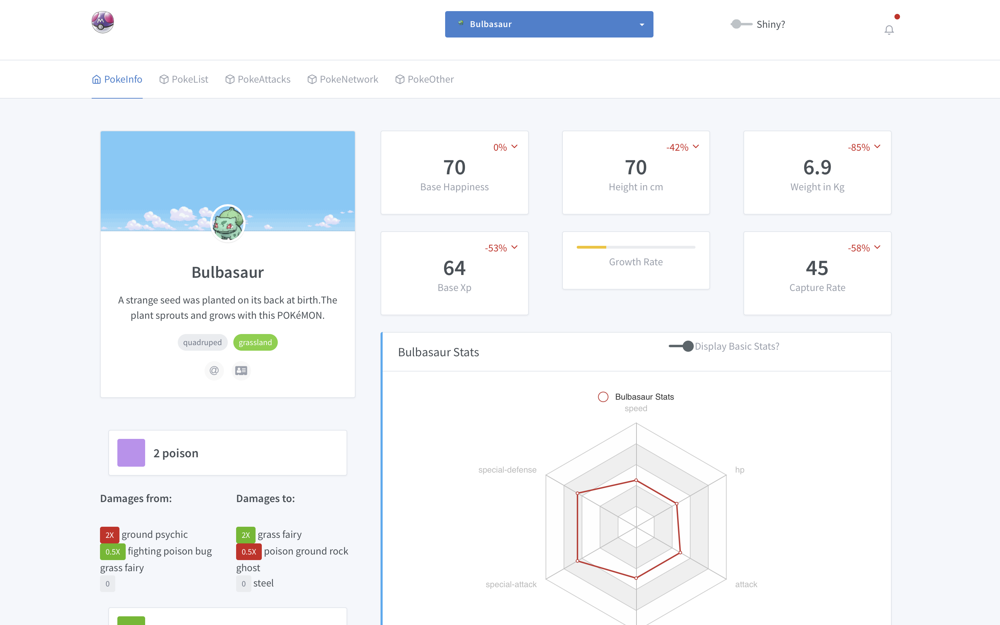
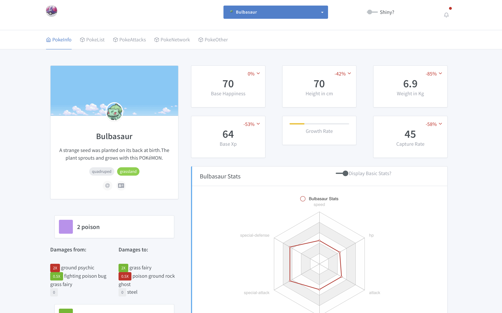

Chapter 1 Introduction
1.2 Book structure
This book is organized into five parts.
- We first go through the basics of HTML, JavaScript and jQuery
- Part 2 contains chapters dedicated to the partially hidden features of Shiny, yet so fun. We dedicate an entire chapter to describe how inputs work in detail and how to add new inputs to the system
- In part 3, we dive into the
{htmltools}(Cheng et al. 2020) package, providing functions to create and manipulate shiny tags as well as manage dependencies - Part 4 focuses on the development of a new template for Shiny by demonstrating examples from the
{tablerDash}and{shinyMobile}(Granjon 2020; Granjon, Perrier, and Rudolf 2020) packages. These, and more may be explored further as part of the RinteRface project. - Part 5 present some tools of the R community, like
{fresh}Perrier and Meyer (2020b)], to beautify apps with only few lines of code
1.3 Code structure
This book has a side package containing all the necessary material to run the code without having to reload each previous snippet.
It covers Chapters 7, 8 and the whole Practice section.
There is another good reason for this package: provide a robust method to bundle JavaScript/CSS code along side any shiny app. Indeed, it is quite tempting to proceed as below:
ui <- fluidPage(
tags$script(
"$(function() {
Shiny.addCustomMessageHandler('hello', function(message) { alert(message);
});
});
"
),
actionButton("go", "Send")
)
server <- function(input, output, session) {
observeEvent(input$go, {
session$sendCustomMessage("hello", message = "plop")
})
}
shinyApp(ui, server)It is fine if the app purpose is a simple demonstration. In our case, since we aim at providing reusable template elements, we need a better approach, that will be described later.
1.4 Preliminary exercices
Before starting with technical details, we propose to play a little game. Among all the images shown, what are the ones corresponding to shiny apps?
 



1.5 Introduction
Shiny allows the development of web applications with R in minutes. Let’s face it: this is quite mind blowing! While this may not be a production ready app, it will still be a fully functional, working prototype. Believe me, doing a web application with pure HTML/CSS and JavaScript is more difficult, especially for someone with a non-web developer background.
1.6 Shiny generates HTML code from R
Let’s start with a little exercise:
- Run the following code:
Hello World
- Copy and paste this code to the R console. What do you observe?
Notice the output format is an example of an HTML tag. The p function generates HTML (see chapter 2). The main difference between HTML tags and Shiny tags is the absence of closing tag for Shiny. For instance, in raw HTML, we expect <p> to be closed by </p>. In Shiny, we only call p(...), where ... may be attributes like class/id or children tags. For a R developer, being able to generate HTML code from R allows to remain focused on the main task instead of the web development burdens.
As stated in the general introduction @ref{intro}, a production app sometimes needs to custom elements that are not contained or hidden in Shiny’s core.
Is a Shiny app less customizable than a classic web app? Not at all! Under the hood, Shiny has its own engine to build HTML tags, through R, meaning that all HTML elements are available. You may also include any custom JavaScript or CSS code.
1.7 HTML 101
This chapter provides a short introduction to the 3 main web languages, namely HTML, CSS and JavaScript. The following content is crucial to understand part @ref{htmltools-overview} about HTML generation from R.
1.7.1 HTML Basics
HTML (Hypertext Markup Language) is derived from SGML (Standard Generalized markup Language). An HTML file contains tags that may be divided into 2 categories:
- paired-tags: the text is inserted between the opening and the closing tag
- closing-tags
Tags may be divided into 3 categories, based on their role:
- structure tags: they constitute the skeleton of the HTML page (
<title></title>,<head></head>,<body></body>) - control tags: script, inputs and buttons (and more). Their role is to include external resources, provide interactivity with the user
- formatting tags: to control the size, font of the wrapped text
Finally, we distinguish block and inline elements:
- block elements may contain other tags and take the full width (block or inline).
<div></div>is the most commonly used block element. All elements of a block are printed on top of each others - inline elements (for instance
<span></span>,<a></a>) are printed on the same line. They can not contain block tags but may contain other nested inline tags. In practice, we often see<a><span></span></a> - inline-block elements allow to insert block element in an inline
Consider the following example. This is clearly a bad use of HTML conventions since an inline tag can not host block elements.
Importantly, <div> and <span> don’t have any semantic meaning, contrary to <header> and <footer>, which allow to structure the HTML page.
1.7.2 Tag attributes
Attributes are text elements allowing to specify some properties of the tag. For instance for a link tag (<a></a>), we actually expect more than just the tag itself: a target url and how to open the new page … In all previous examples, tags don’t have any attributes. Yet, there exist a large range of attributes and we will only see 2 of them for now (the reason is that these are the most commonly used in CSS and JavaScript):
- class: may be shared between multiple tags
- id: each must be unique
<div class="awesome-item" id="myitem"></div>
<!-- the class awesome-item may be applied to multiple tags -->
<span class="awesome-item"></span>Both attributes are widely used by CSS and JavaScript (see Chapter 6 with the jQuery selectors) to apply a custom style to a web page. Class attributes apply to multiple elements, however the id attribute is restricted to only one item.
Interestingly, there exists another attribute category, know as non-standard attributes like data-toggle. We will see them later in the book (see Chapter 12).
1.7.3 The simplest HTML skeleton
An HTML page is a collection of tags which will be interpreted by the web browser step by step. The simplest HTML page may be defined as follows:
<!DOCTYPE HTML>
<html>
<head>
<!-- head content here -->
</head>
<body>
<!-- body content here -->
</body>
</html><html>is the may wrapper<head>and<body>are the 2 main children<head>contains dependencies like styles and JavaScript files (but not only),<body>contains the page content and it is displayed on the screen. We will see later that JavaScript files are often added just before the end of the<body>.
Only the body content is displayed on the screen!
Let’s write the famous Hello World in HTML:
<!DOCTYPE HTML>
<html>
<head>
<!-- head content here -->
</head>
<body>
<p>Hello World</p>
</body>
</html>In order to preview this page in a web browser, you need to save the above snippet to a script hello-world.html and double-click on it. It will open with your default web browser.
1.7.4 About the Document Object Model (DOM)
The DOM stands for “Document Object Model” and is a convenient representation of the html document. There actually exists multiple DOM types, namely DOM-XML and DOM-HTML but we will only focus on the latter. If we consider the last example (Hello World), the associated DOM tree may be inspected in Figure 1.1.
1.7.4.1 Visualizing the DOM with the HTML inspector
Below, we introduce a tool that will facilitate our exploration of beautiful shiny user interfaces. In this section, we restrict the description to the first panel of the HTML inspector.1 This feature is available in all web browser, however for demonstration purposes, we will only focus on Chrome. It may be opened:
- after a right click and selecting inspect
- after clicking on F12 (windows), fn + F12 on Mac
In the following:
- Open the hello-world.html example in a web browser (google chrome here)
- Right-click to open the HTML inspector (developer tools must be enabled if it is not the case)
The HTML inspector is a convenient tool to explore the structure of the current HTML page. On the left-hand side, the DOM tree is displayed where we clearly see that <html> is the parent of <head> and <body>. <body> has also 1 child, that is <p>. We may preview any style (CSS) associated to the selected element on the right panel as well as Event Listeners (JavaScript), which will be discussed that in the next chapter.

FIGURE 1.1: Inspection of the DOM in the Hello World example
1.7.5 Preliminary introduction to CSS and JavaScript
To introduce this section, I propose to look at the very first website, early in the 90’s (August 1991 exactly). From an aesthetic point of view (see Figure 1.2), this is far from what we can observe today as shown in Figure 1.3.

FIGURE 1.2: World wide web website

FIGURE 1.3: RinteRface website: https://rinterface.com
How can we explain that difference? One of the main reason is the absence of CSS (Cascading Style Sheet) since the first CSS release only appeared in December 1996, that is 5 years later than the first web site publication. CSS allows to deeply customize the appearance of any web page by changing colors, fonts, margins and much more. We acknowledge, the role of JavaScript cannot be demonstrated through the previous example. Yet its impact is as important as CSS, so that it is now impossible to dissociate HTML, CSS and JavaScript.
1.7.5.1 HTML and CSS
CSS (Cascading Style Sheets) changes the style of HTML tags by targeting specific classes or ids. For instance, if we want all p tags to have red color we will use:
To include CSS in an HTML page, we use the <style> tag as follows:
<!DOCTYPE HTML>
<html>
<head>
<style type="text/css">
p {
color: red;
}
</style>
</head>
<body>
<p>Hello World</p>
</body>
</html>You may update the hello-world.html script and run it in your web-browser to see the difference. The example may be slight, but shows how we may control the look and feel of the display. In a development context, we will see later that css files may so big that it is better to include them in external files.
1.7.5.2 HTML and JavaScript
You will see how quickly/seamlessly you may add awesome features to your shiny app.
Let’s consider the following example:
<!DOCTYPE HTML>
<html>
<head>
<style type="text/css">
p {
color: red;
}
</style>
<script language="javascript">
// displays an alert
alert('Click on the Hello World text!');
// change text color
function changeColor(color){
document.getElementById('hello').style.color = "green";
}
</script>
</head>
<body>
<!-- onclick attributes applies the JavaScript function changeColor define above -->
<p id="hello" onclick="changeColor('green')">Hello World</p>
</body>
</html>In few lines of code, you can change the color of the text. This is only the beginning!
1.8 Discover Shiny dependencies
We are now convinced that Shiny creates HTML code for us. Is it enough to design a beautiful working app with user interactions? For sure no! As shown above, we also need CSS and JavaScript. Let’s explore these elements in the following exercise.
- The simplest Shiny layout is the
fluidPage. Theshinyapppredefined Rstudio snippet will create a basic app skeleton (type shinyapp in RStudio IDE):
At first glance, the page only contains text. Wait … are you sure about this? Let’s run the above example and open the HTML inspector introduced in 1.7. Results are displayed on Figure 1.4.

FIGURE 1.4: Shiny dependencies
Click on “Open in Browser”.
Open the HTML inspector.
Locate the
<head>tag.Uncollapse it and search for the script containing
application/html-dependencies.
We see in the head section, delimited by <head></head>, that Shiny has four dependencies:
- json2
- jQuery 3.4.1
- shiny (custom JavaScript and CSS)
- Bootstrap 3.4.1 (JavaScript and CSS) + other files (html5shiv, respond)
Bootstrap is here to provide plug and play design and interactions (tabs, navigation bars, tooltips, popovers, …). For instance the fluidRow and column functions of Shiny leverage the Bootstrap grid to control how elements are displayed in a page. This is convenient because it avoids writing a large amount of CSS/JavaScript that essentially juts reinvents the wheel.
As mentioned in Chapter 6, jQuery allows to perform DOM manipulation, that is interacting with HMTL elements, in a more user-friendly manner than with pure JavaScript.
Shiny has its own JS and CSS files. We will discuss some of them later in this section.
Finally, json2 is a library to handle the JSON data format (JavaScript Object Notation). The R / JS communication involves data exchange and given that data structures are not the same in R and JS, there must be a way to ensure the translation. This is done through the jsonlite package that allows to transform JSON objects in R objects with jsonlite::fromJSON and inversely with jsonlite::toJSON. Fortunately Shiny automatically handles the process and it works well most of the time!
- Try to delete the bootstrap.min.css and ion.rangeSlider.css.
- Conclusions.
In summary, all these libraries are necessary to make Shiny what it is!
In Chapter 3 we will explore tools to manage HTML dependencies. In Chapter 15.4.1, we will see a special case to insert dependencies during the app runtime
Let’s move to the next part to discover how Shiny creates HTML code from R!